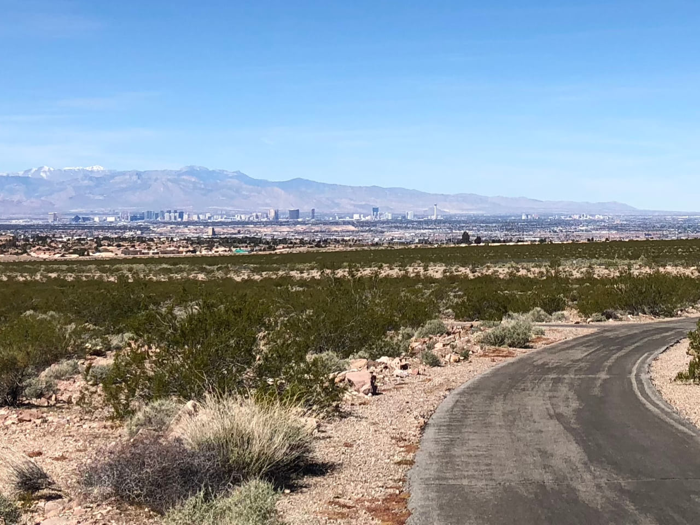
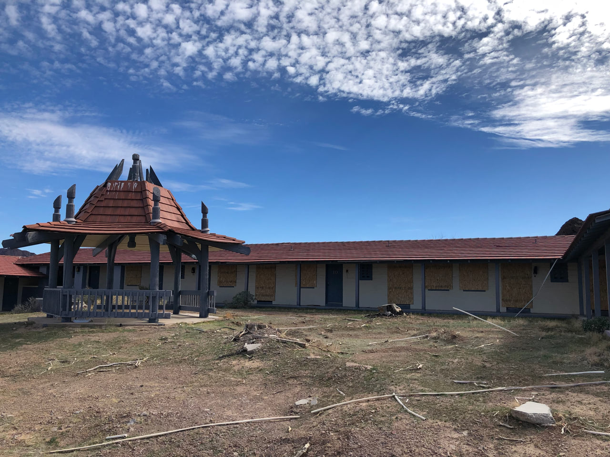
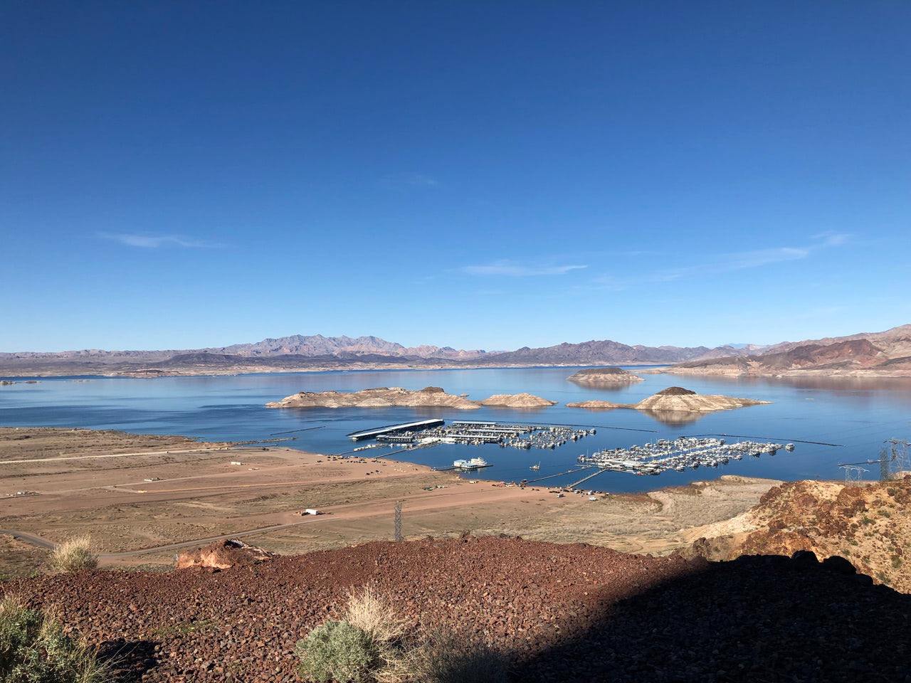
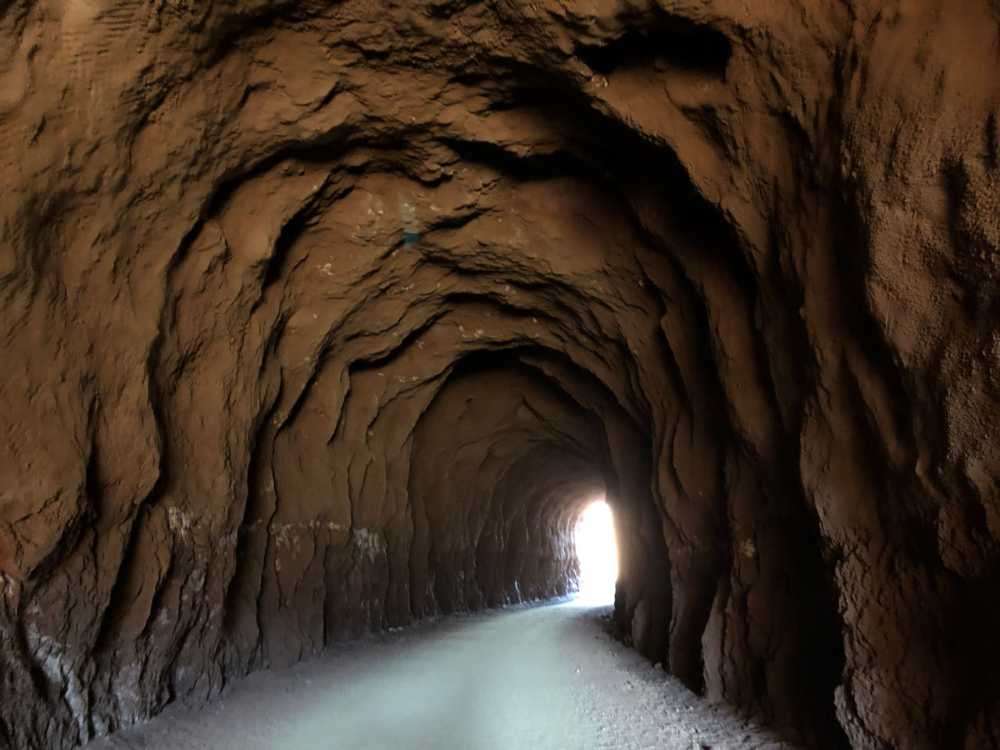

Henderson, NV is maybe twenty minutes away from the Las Vegas strip. You exit the freeway and start to move through the residential neighborhoods, and all the homes are beige. The yards are beige. Today started about three hours late thanks to a mishandled checked bag, and as the car drove through Henderson to the trailhead, my mood was more or less beige.
I chose Equestrian Park as my starting point, about three miles into the River Mountains Loop Trail by its mile markers. The name of that park evokes maybe some horses, or wide open green space. But it was more beige: sand, cacti, and scrub brush. Nevertheless, the smooth asphalt trail with lane markings looked good to me, and I started off with spirits high. For the first couple miles, the towering casinos of the strip glistened in the distance to my left. Their dazzle was in such contrast to the simple, arid landscape that they felt even farther away.
Once the trail turned away from the strip and started making its way toward Lake Mead, the “mountains” part of its name started to make sense. I spent a few stretches walking, both uphill and some downhills, because as the topography became more severe, the trail itself started adopting traditional road features like switchbacks. Flying down hairpin turns was not something I was interested in, in the same way I would not enjoy scraping my knees and having the blood just kinda evaporate into the hot dry air. One of these particularly perilous stretches is called out on the map as Three Sisters. Three hills in quick succession? Felt like more.
At mile marker 14, the trail merged onto an abandoned stretch of Lakeshore Road. Old-style rounded concrete curbs dotted its southern border, and it often cut through hillsides. I could visualize Frank Sinatra driving a Cadillac with the top down on his way to the tables.

From here, both the elevation changes and the views only got more dramatic. Coming down from the carved mountain road, Lake Mead started to sneak into view. Time and climate being what it is, I could see the telltale lines across its edges where water levels were higher in the past, as much as I could see the remaining water. Then the trail curved away again to head toward an imposing, probably impassible mountain range. I took a breather and started to wonder what I’d gotten myself into – surely that challenging section where a road was cut through a (smaller, okay) mountain range was as hard as it would get! A cyclist headed in the opposite direction stopped to get my attention. He pointed to a tiny figure in the distance, two or three switchbacks away. “Check on her for me, okay? I’m worried about her.” A few minutes later, I caught up to her fumbling with her pack. “Oh, did he ask about me? I was only taking off a layer!”
Sneaking more around the foothills of these mountains than going directly through them, the trail started to run parallel to Lake Mead’s shores. There were gigantic equipment installations, no doubt to steal what little water remained for the thirsty strip. There was a huge marina in the distance, and closer a little beach area with a vast parking lot full of RVs. And then, a little ways back toward the mountains from that, the abandoned Lake Mead Lodge. Roped off with heavy chains and traffic cones, it was clear they didn’t want me poking around. So I hopped back on the trail and started climbing for what seemed like forever but wasn’t very far, as proven by the trailside plaque detailing the Lodge’s downfall as receding water levels took away its lakefront status.
More arduous uphills in a falling yet still bright sun brought me to a fork in the trail. The River Mountains Loop continued to the right, approximately 13 miles back to where I started. The Historic Railroad Trail diverged to the left, a gravel path over the old railway used to bring equipment to the then-under-construction Hoover Dam. I’d planned on taking this detour, 3.3 miles out to see the dam, doubling back, and finishing the loop, so off to the left I went. While the gravel forcing me to walk was a bummer, walking was actually nice. Even though I’d been complaining about going uphill for hours, I couldn’t appreciate just how far uphill it had been until the path turned a corner and there was that same marina, looking like a model train miniature, infinitely far below me. Such elevation achieved entirely through human power!
started from the bottom, now I’m here
The railroad path continued through a series of tunnels, seemingly unchanged from when they were blasted in the 1930s. Giant wooden timbers propped up the archway entrances, and some of the longer ones felt like background scenery from Indiana Jones. The path went straight up to the parking lot for the Hoover Dam visitor center, where I obviously took a break to walk around and be a tourist.
The break became permanent because the sun was already showing signs of setting and I was facing an hour’s walk back just to rejoin the loop trail. On the drive back, I got to see a fair chunk of the remaining trail running parallel to the road. It was smooth concrete with matching sloped walls rising up from either side. It basically looked like the LA River in any movie: the race in Grease, the opening of The Core, any movie! There were even arched gates over the trail every once in a while, looking like artificial height restrictions, complete with stop signs. So I don’t entirely feel like I missed out or failed to achieve my goal of doing the whole thing. Two thirds of all those uphills was plenty.